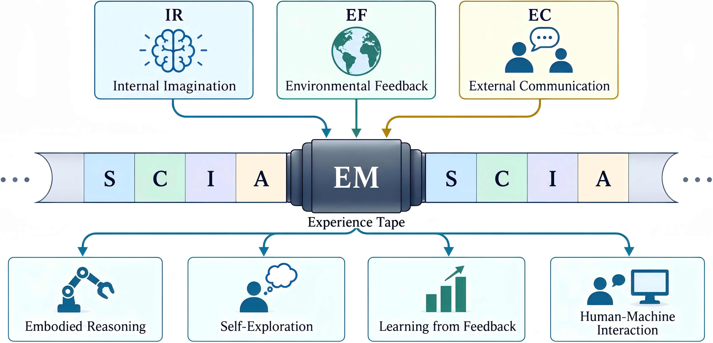
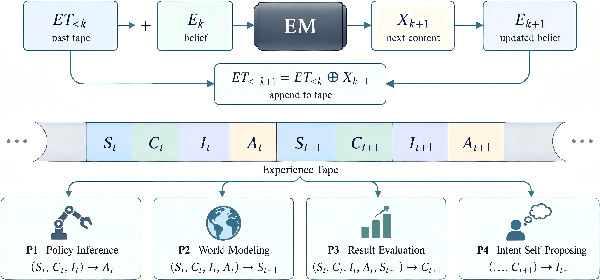
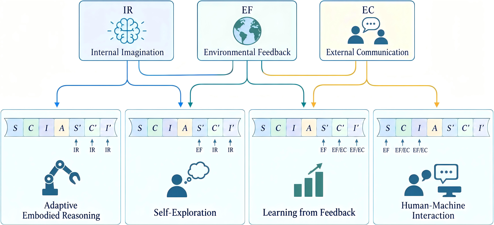

The Experience Machine
A Conceptual Computation Model for Experience-Driven Intelligence
Overview
The Experience Machine (EM) proposes a simple abstraction for experience-driven intelligence: an agent continuously reads and writes an Experience Tape, where interaction histories become the substrate for future reasoning, prediction, action, and adaptation.

Abstract
Humans learn from experience, while most current embodied agents do not. Modern robots are largely trained from offline demonstrations and exhibit only limited adaptation after deployment. The Experience Machine (EM) is a conceptual model for experience-driven intelligence: a computational paradigm in which intelligence continuously adapts to accumulated experience.
EM draws inspiration from the Turing Machine and views experience as a tape written with state, critique, intent, and action in temporal order. The machine reads this tape to perform prediction and processing, unifying policy inference, world modeling, outcome evaluation, and internal belief updating.
The key idea is that tape content can come from diverse sources: internal imagination, real-world interaction, and human supervision. This provides a common view of embodied reasoning, self-exploration, reinforcement learning from environment, and human-machine interaction.
Main Contributions
- Introduces the Experience Machine as a conceptual computation model centered on accumulated experience.
- Defines the Experience Tape as a shared temporal structure for state, critique, intent, and action.
- Shows how different experience sources can naturally produce reasoning, self-exploration, feedback learning, and human-machine interaction.
Experience Tape
The Experience Tape records the interaction history of an intelligent system. At time t, it contains four kinds of content:
- State St: the current world observation.
- Critique Ct: evaluation of accumulated experience.
- Intent It: the objective or demand for interaction.
- Action At: the action produced by policy inference.
ET = (..., St, Ct, It, At, St+1, Ct+1, It+1, At+1, ...)
Computational Model
Given the current tape and internal belief, EM performs sequential next-content prediction. The predicted content is written back to the tape and becomes context for subsequent computation.
- Policy inference: predict action from state, critique, and intent.
- World modeling: predict the next state after an action.
- Result evaluation: predict critique from the resulting experience.
- Intent self-proposing: propose a new intent or subgoal.

Experience Sources
EM classifies experience according to who or what writes to the tape.
- Internal imagination: model-generated experience used for reasoning, failure analysis, and self-exploration.
- Environmental feedback: grounded state and outcome information written by real-world interaction.
- External communication: human instructions, demonstrations, corrections, and evaluations.
Capabilities
By changing the sources of state, critique, intent, and action, the same tape-based computation can express several experience-driven behaviors:
- Adaptive embodied reasoning: deliberate through imagined futures before execution.
- Self-exploration: use observed outcomes to generate new critiques and intents.
- Learning from feedback: incorporate environmental or human evaluation into future behavior.
- Human-machine interaction: treat task assignment, correction, and guidance as writes to the same tape.

Conclusion
The Experience Machine treats experience as a dynamic computational tape. It places reasoning, prediction, action, feedback, and interaction inside one sequential process. Rather than proposing a specific architecture, EM provides an abstraction for future systems that adapt continuously through accumulated experience.
If you want to read the full content, please see the full paper.
Citation
@draft{yuan2026experience,
title = {The Experience Machine: A Conceptual Computation Model for Experience-Driven Intelligence},
author = {Yuan, Chengbo},
year = {2026}
}